Athletes
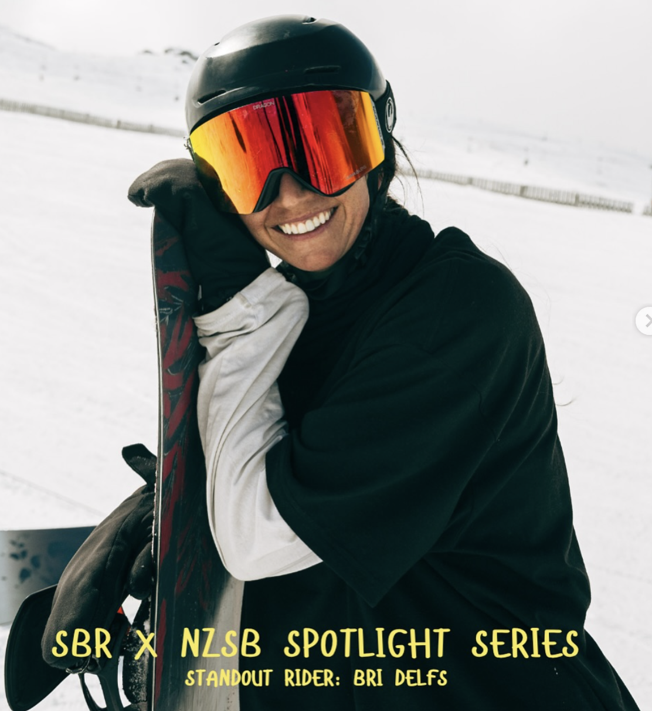
Bri Delfs
What gets you up the mountain? Psychologically, what I think it really is, is that we can be our best
What gets you up the mountain?
Psychologically, what I think it really is, is that we can be our best, most lighthearted and
most fun selves when we're snowboarding and when we're out in nature, especially when we're on
a snow-covered mountain. And so I really think it’s wonderful - and wonderfully healthy - to try
to be that best version of yourself but also get to interact with other people's best versions
of themselves. The kindest, the most stoked, the most energetic, motivated and self-challenging.
That's what gets me up the hill. That's what I really enjoy.
How did you get into snowboarding?
I did an instructor gap year course when I was 18 instead of going to university. Somehow I passed
levels one and two. Honestly, barely, the examiners said, ‘your riding isn't there now, but we think
it'll get there, so we'll give this to you.’ From there, my roommates told me about getting an
instructor job in New Zealand. I was 19 and went, ‘oh yeah, that sounds great. What's a working holiday visa?’
When was your first season in New Zealand?
That was 2010 at Coronet Peak. I ended up getting hired as a ‘try-out.’ As in, I wasn't offered the job
immediately, I had to try out for it. I remember feeling like a gender-diversity hire back then, and
definitely did not feel like a snowboarder - but I also remember really trying to push myself to keep up
with the other instructors at clinics and icy early morning laps. I’m so touched that the friends I made
in that first season are still such important people in my life - people I really look up to.
And what inspired your interest in riding park?
In my first season, they put a box down at the back magic carpet, a big dance floor, and I would go hike
it at lunch breaks. I had no concept of edge control, my stance was way too wide, but I thought, ‘board
slides are my new favourite feeling in the world.’ The next season, I realised all the ‘cool freestyle
girls’ with their tall tees and tight pants worked at Remarks, so that’s where I went. I said to myself,
‘I'm going to wear knee pads and fall down on so many rails.’
Do you remember a defining moment or period when you realised this is what you wanted to do?
The short answer is no, haha. I am so grateful for snowboarding, but sometimes I get a bit existential
about it. In those moments I just zoom out, breathe, and reflect on opportunities, experiences, and
friendships, and try to be kind to myself. This sport has rewritten my DNA, there’s no denying that.
That being said, for a very brief moment, I fantasised about being a half pipe rider. I remember
standing at the top of a pipe when I was 19 or 20, after watching a lot of X Games and thought, ‘I think
I can do this. I think I can be a professional halfpipe rider.’ Then I caught my heel edge, hit my head
and thought, ‘I don’t want to do this!’
She’ll Be Right Spotlight Series, 2025
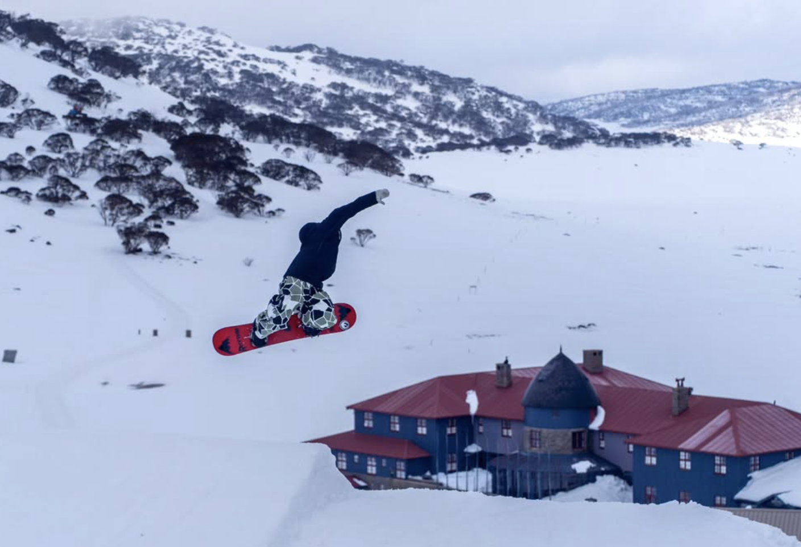
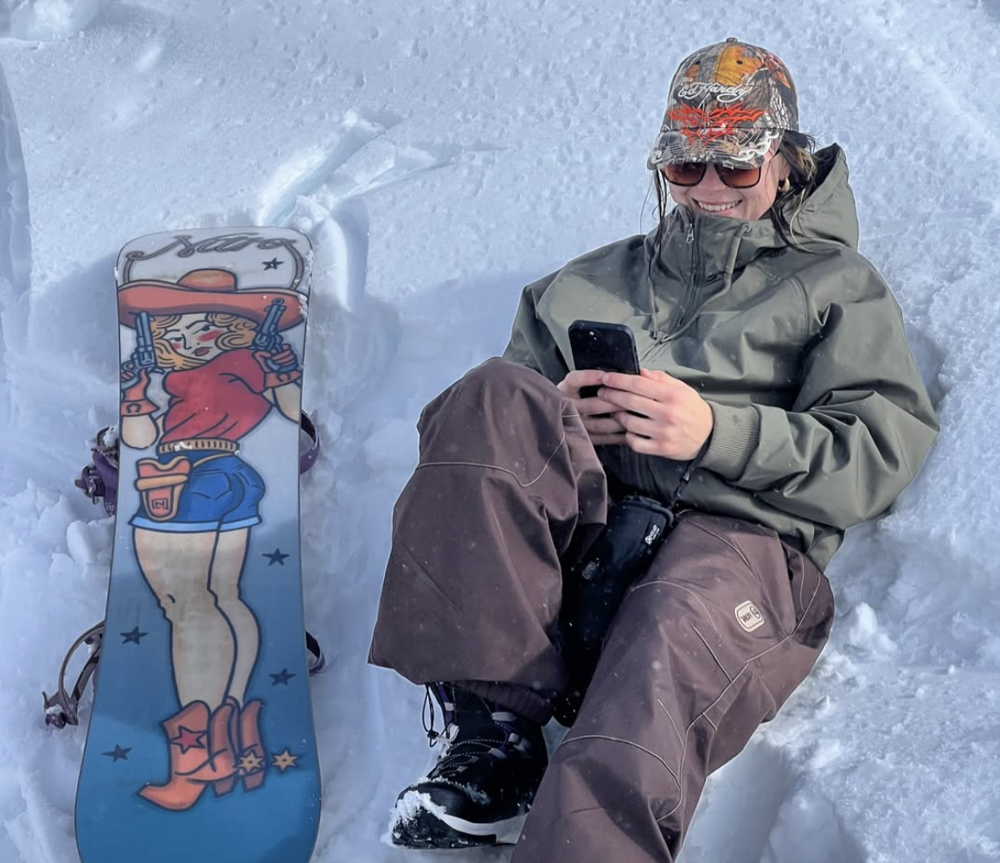
Emma Thompson
Emma Thompson is an incredibly talented snowboarder with a natural passion for the sport.
Emma Thompson is an incredibly talented snowboarder with a natural passion for the sport. As a Nitro ambassador, Emma specialises in park riding, showcasing her creativity, confidence and impressive skills across the mountain. Known for pushing her limits, progressing her riding and bringing her own style to every session, she embodies the energy and spirit of snowboarding. Her dedication, adventurous attitude and love for the sport make her an amazing rider and a f antastic ambassador for the snowboarding community.
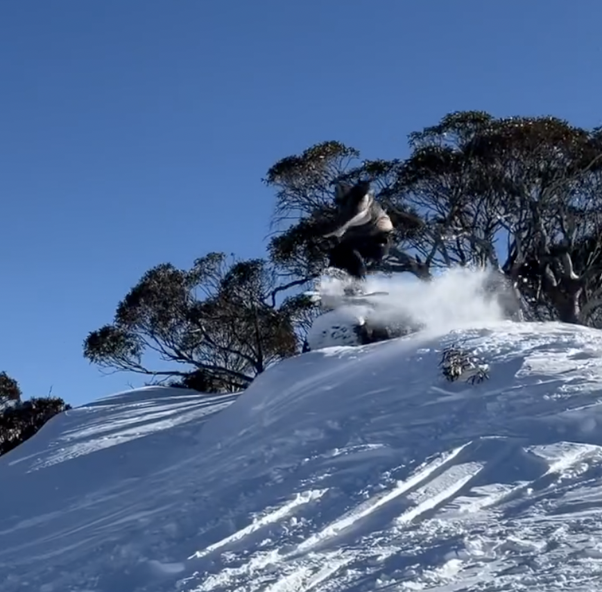
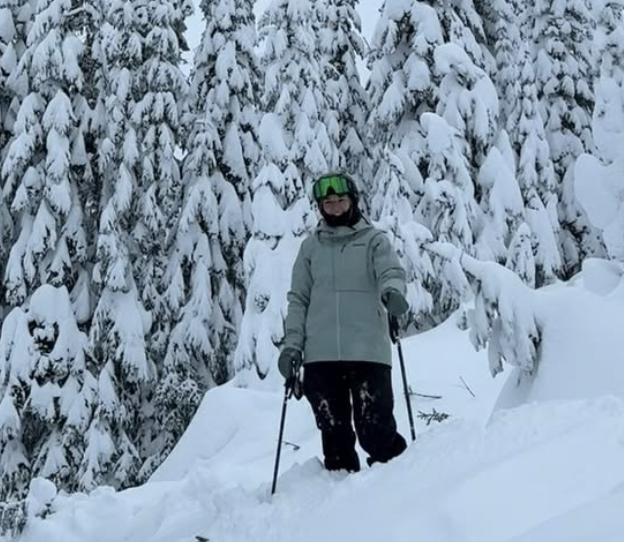
Kyleigh Stewarts
Kyleigh Stewart is a talented Canadian athlete with a passion for both skiing and mountain biking.
Kyleigh Stewart is a talented Canadian athlete with a passion for both skiing and mountain biking.
With a background in the snowsports industry and a love for life on the mountain, she brings the
same confidence, determination and adventurous spirit to everything she does. Known for her mountain
biking, including downhill and freeride, Kyleigh has also developed a love for skiing, embracing
everything the mountain has to offer. Her enthusiasm for action sports and dedication to the outdoors
make her a fantastic representation of women in snowsports.

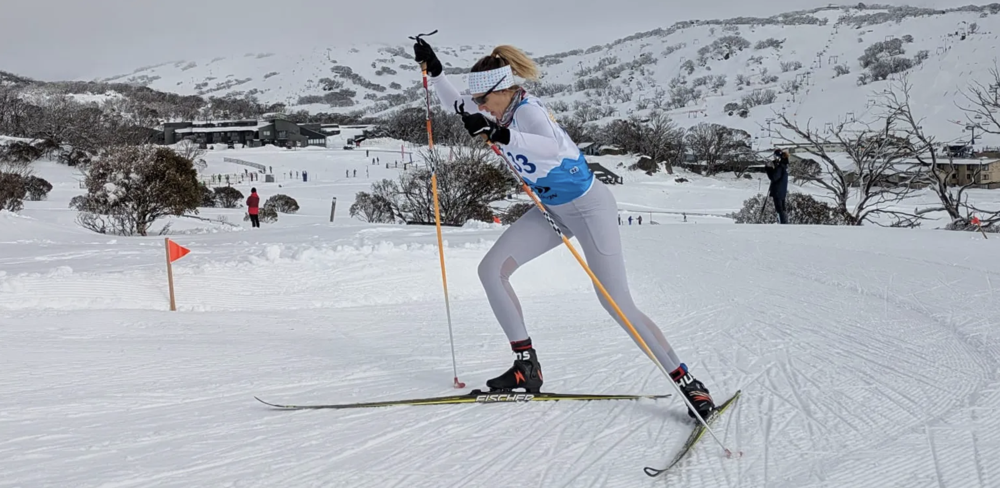
Sarah Slatery
How many years competing? Racing FIS and Continental Cups for over 15 years.
How many years competing?
Racing FIS and Continental Cups for over 15 years.
When did you start training competitively?
15 years old.
Favourite race?
2018 Kangaroo Hoppet in Falls Creek. I find the pressure of race days difficult.
I envisioned so many scenarios, and the best one played out! It was the hardest I’ve ever pushed
in a race, I thought I had reached my limit, but in a 42km race, you have time to find more fight.
How do you ease comp nerves?
Meditation, visualisation, preparation, and planning the logistics
of the day beforehand. Having family track side also makes a huge difference for me.
Favourite part about competing?
The cool down after! I love the camaraderie among the women. After
a race, you can always find someone to go cool down with and debrief. It’s so nice to talk among
people who are training and trying as hard as you are. Racers are also always looking for “flow” –
I’ve only had this happen 5 times, but I’m always chasing it!
Go-To hype song?
“My Breath” by Adam K – it’s a remix of Destiny’s “Child Lose My Breath” and it’s
four minutes long, which is also good for training intervals!
Something we don’t know about your discipline?
Getting the wax right for both glide and, in classical,
grip, is hard and even the best techs in the world get it wrong sometimes.
Any pre-comp rituals?
Look good, smell good, feel good – and wear good knickers! It sounds trivial but
I think any way you can help boost your confidence and comfort when tackling hard things helps.
Any goals that you’re comfortable sharing?
I just came back having not achieved a big goal of mine,
so right now I’m having a hard time letting it go and refocusing. I still love training and racing
though and there is this one Aussie race I would love to win one day – watch this space!
Shoutouts?
Mick, Rolf and Anna from Rhythm Snowsports. They’ve supported me so much over the years
and still do now!
- Rhythm Snowsports Magazine, 2026
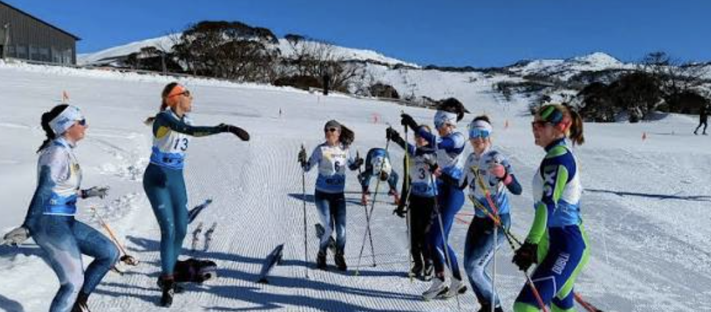
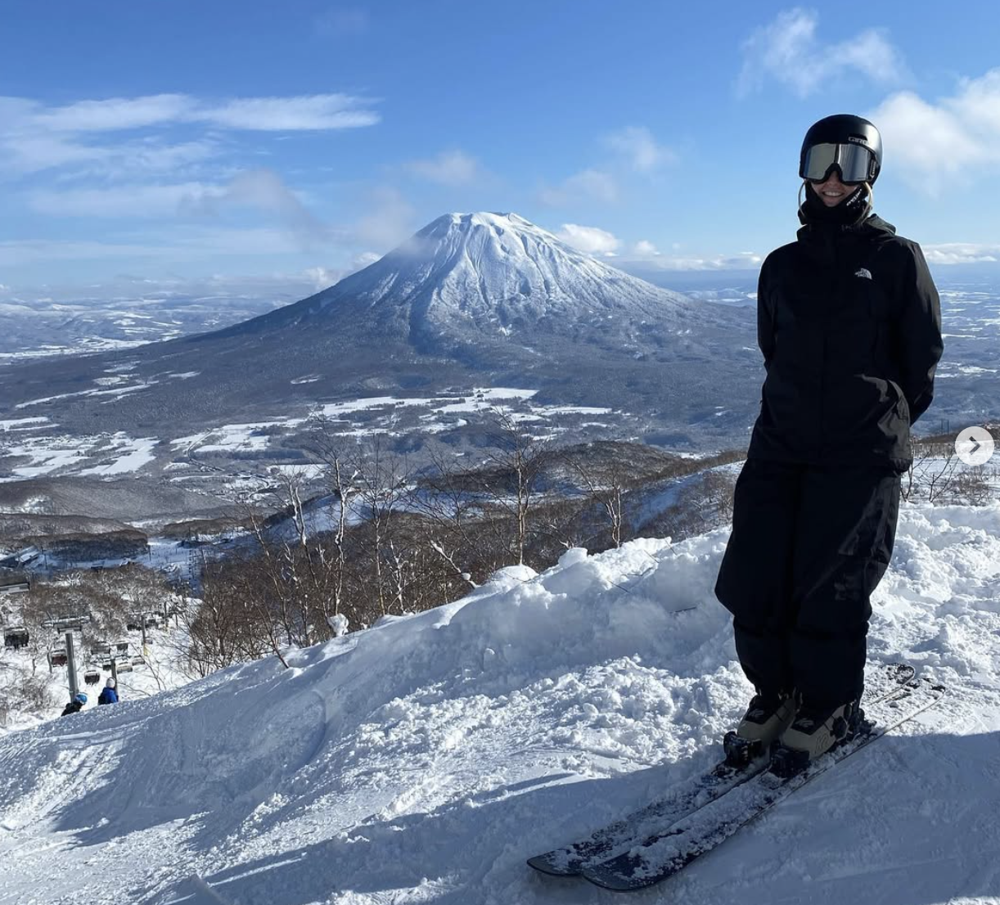
Liz Lisle
Elizabeth (Liz) Lisle is a passionate backcountry skier who embraces the adventure and freedom of exploring beyond the resort boundaries.
Elizabeth (Liz) Lisle is a passionate backcountry skier who embraces the adventure and freedom
of exploring beyond the resort boundaries. Drawn to untouched terrain, fresh powder and the
challenges of the mountains, Liz embodies the adventurous spirit of backcountry skiing. With a
love for the outdoors and a dedication to exploring the mountains, she represents the growing
community of women pushing boundaries and making their mark in snowsports..
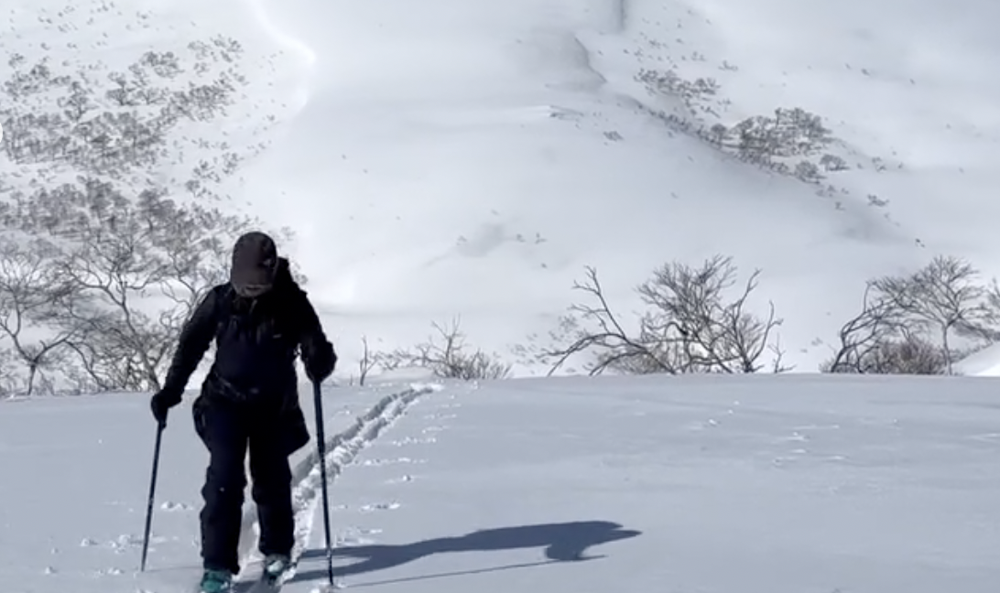
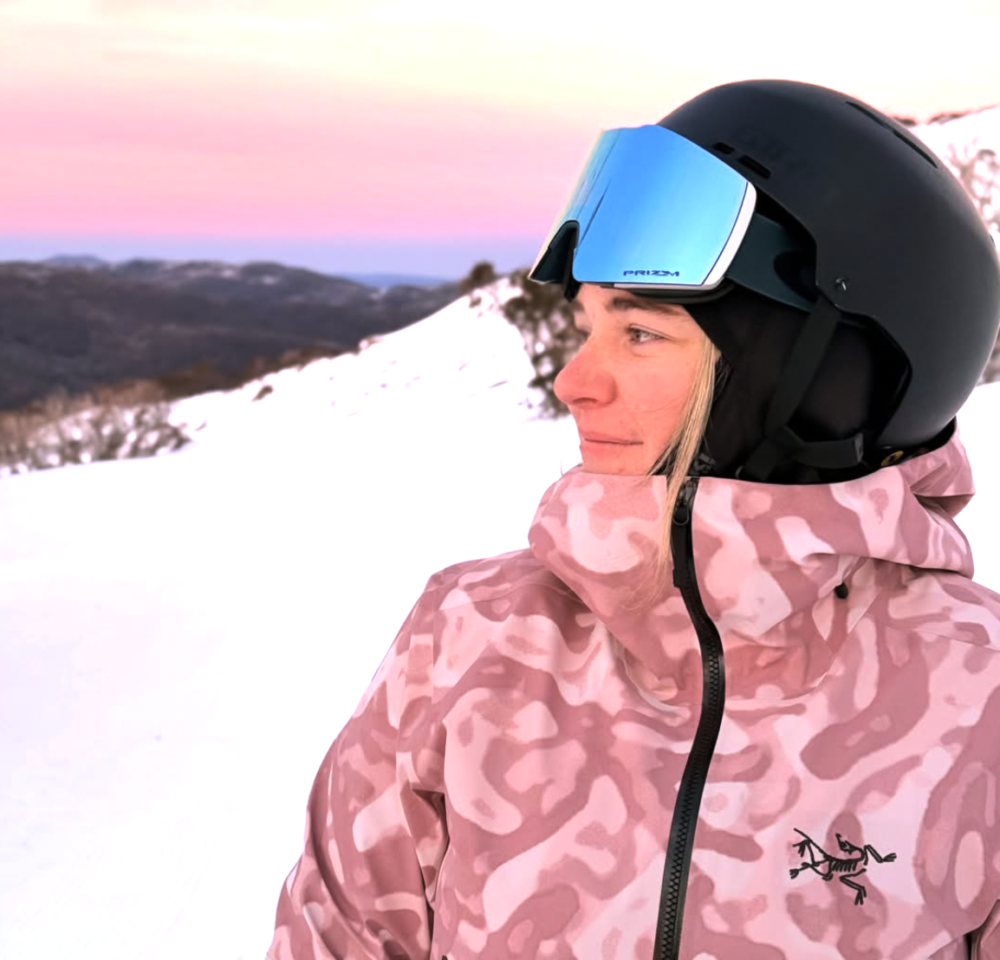
Kadee Laird
Kadee Laird is a passionate skier who brings enthusiasm, determination and a love for adventure to the mountains.
Kadee Laird is a passionate skier who brings enthusiasm, determination and a love for adventure to the mountains. With a dedication to progressing her skiing and embracing new challenges, Kadee represents the adventurous spirit of women in snowsports. Whether exploring the mountain, chasing fresh snow or enjoying time on the slopes, her passion for skiing shines through.
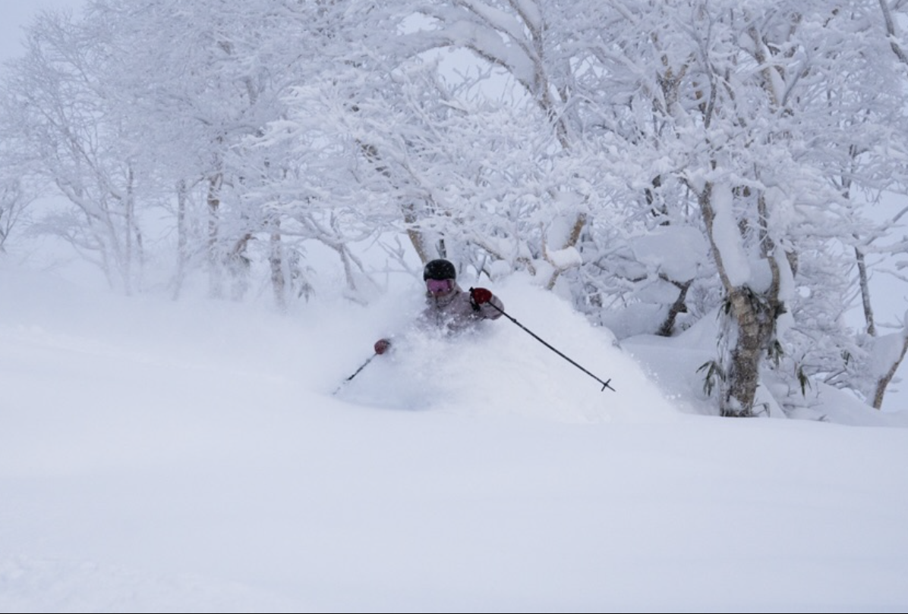